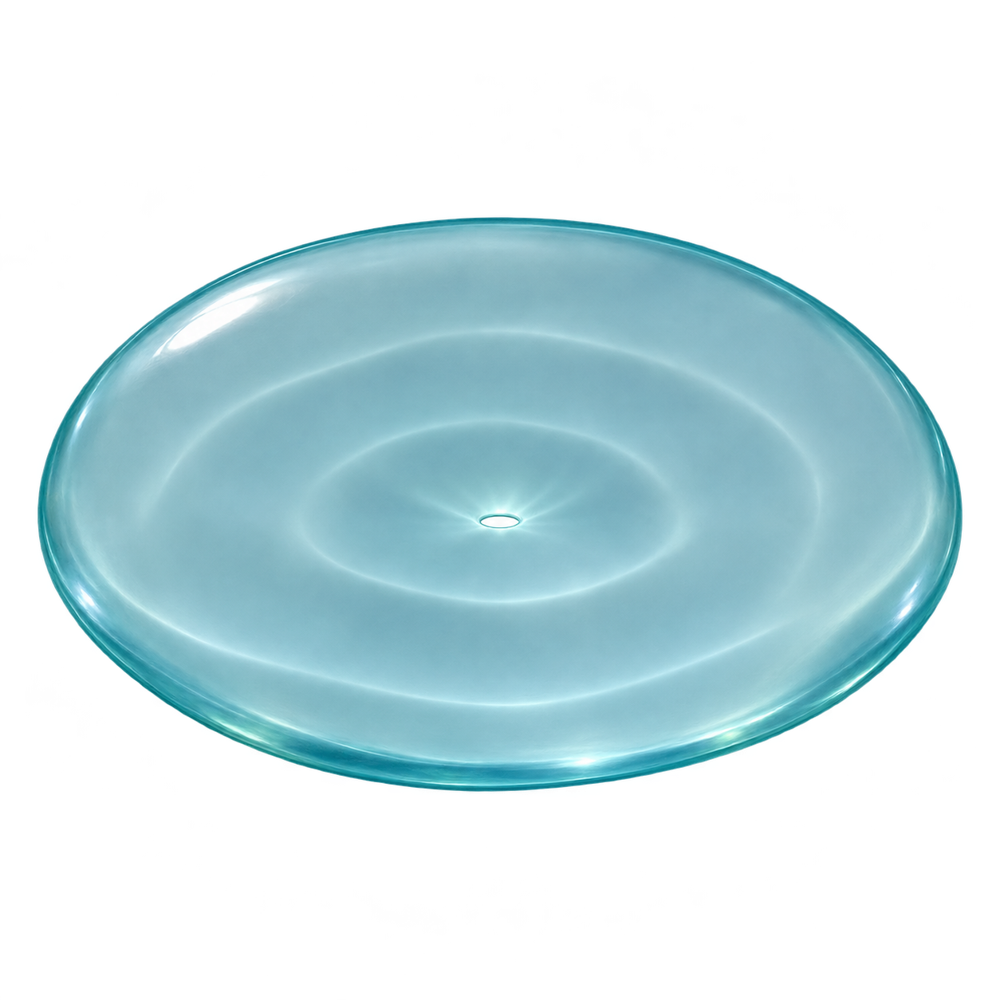

Same sea-glass membrane identity, tested at conversation sizes. The refined image has a stronger rim and fewer internal details. These are asset samples, not live assistant states.
Light interface
Current

Refined companion

VelumDiscuss your workspace by typing or speaking.
Dark interface
Current
Refined companion
VelumDiscuss your workspace by typing or speaking.